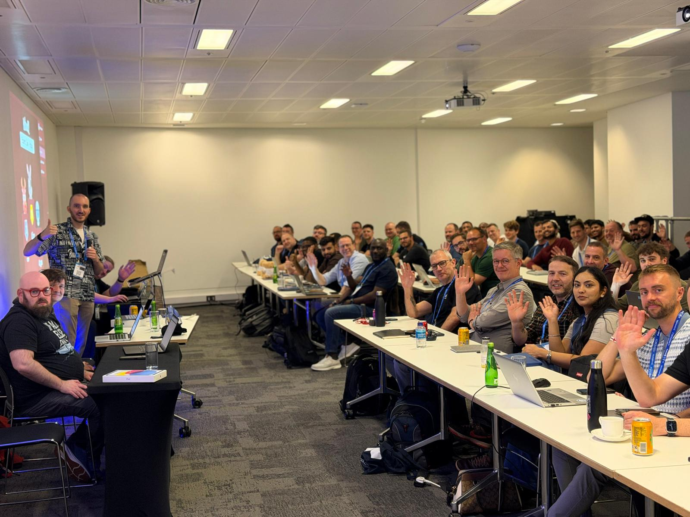

Welcome back everyone! This weeks newsletter comes live from Experts Live UK where I have had a very busy week and am very much looking forward to the weekend.
A special thanks to everyone who attended the Intune pre-day workshop:

This has been put together in trains, hotel rooms and conference rooms so whilst I think I have everything, if I have missed something, I will include it next week!
Community Content
We start this week with a guide on how to convert any Azure VM into a Windows 365 image using only Graph commands from Andrei Shchetkin
https://shchetkin.dev/windows-365-migration-graph-api/
For those of you running cloud native but still needing drive mappings, or the dreaded printers, this script from T-Bone should be the lifeline you are looking for.
Modern Drive and Printer Mapping for Cloud-Native Windows with Intune and PowerShell
Autopatch does an excellent job of handling your updates carefully with the ring based system. But what if you could also use those rings for your own use? Follow this guide from Mads Johansen to learn how
https://evil365.com/intune/UsingAutopatch-RingSystem/
A treat for Lenovo users everywhere, the Lenovo Client Update (LCU) PowerShell module can now be used to get your drivers updated during pre-prov. No more handing out laptops needing driver updates! Learn more here from Philip Jorgensen
https://blog.lenovocdrt.com/autopilot-pre-provisioning-current-drivers-firmware-bios-lcu/
If you are (correctly) using Defender for Cloud Apps to block unsanctioned software but drowning in alerts, this post from Jeffrey Appel will help clear things
CMTrace was always a hidden secret, but this is 2026 and we have to move on (although you will never remove Doom from any of my machines!). Fortunately Florian Salzmann and Jannik Reinhard have created an excellent new cloud based alternative!
When running multi-app kiosks, you definitely don’t want your users accessing apps they shouldn’t be able to access and ideally they shouldn’t be able to see them either. This post from Peter van der Woude shows how to hide those pesky recommended apps
Hiding the recommended section from the Start layout and multi-app kiosk mode
Whilst not Intune related (yet), keeping track with what’s new in macOS is always useful because it will reach Intune eventually. Look at what has been announced in this post from Simon Hartmann Eriksen
If you’re looking at expanding your IT book library, there is an excellent humble bundle here including my book:
Video Content
Now for this weeks video content with a look at some exciting new settings available in Settings Catalog from Mark Oldham
Microsoft Content
If you want to implement Zero Trust for your Intune admin roles themselves, follow this guide from Chris Vetter
It’s a big day, MDOP is now out of support, it will be missed. Learn what this means for you here from Joe Lurie
Learn how to use GitHub Copilot to analyze your Intune logs here with Stefan Röll
That’s all for this week, have an amazing weekend!